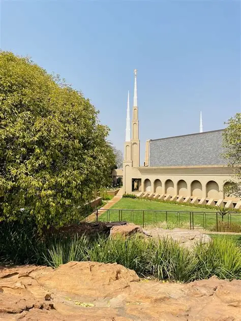

Temple Album
☰
Home
Old
New
Large
Small
Temples Around the World
Temple Gallery
Accra Ghana Temple
Aba Nigeria Temple
Salt Lake Temple
Tokyo Japan Temple

Johannesburg South Africa Temple
Nairobi Kenya Temple
Manila Philippines Temple
São Paulo Brazil Temple
London England Temple